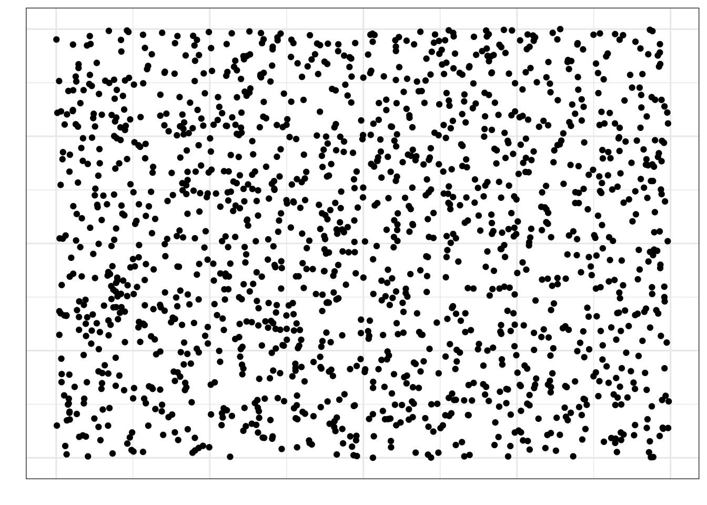
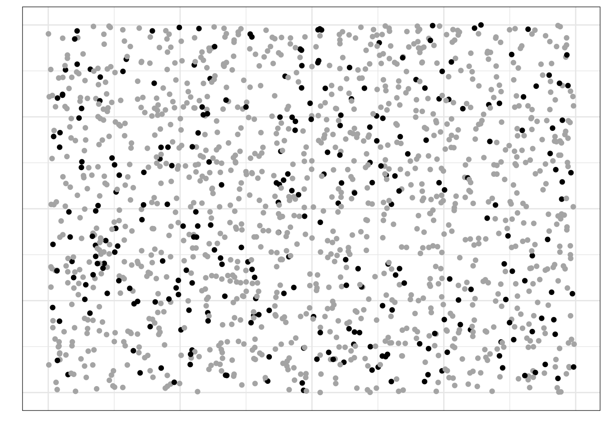
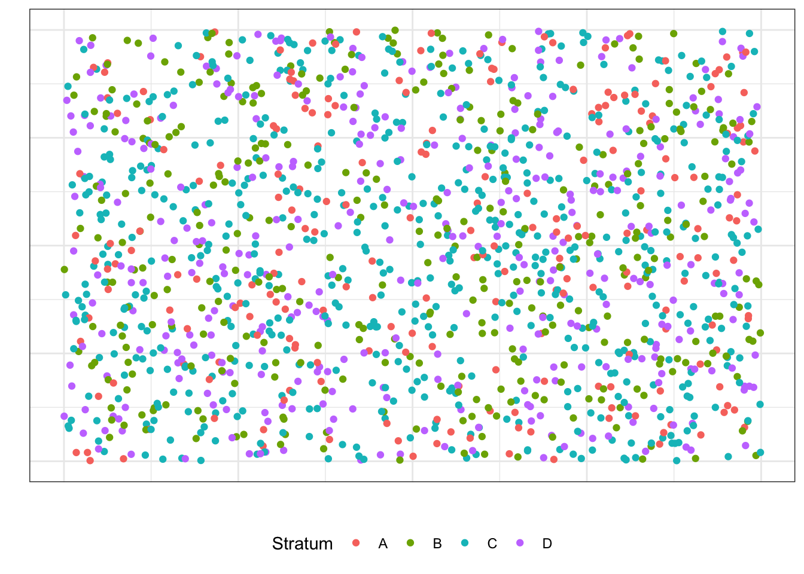
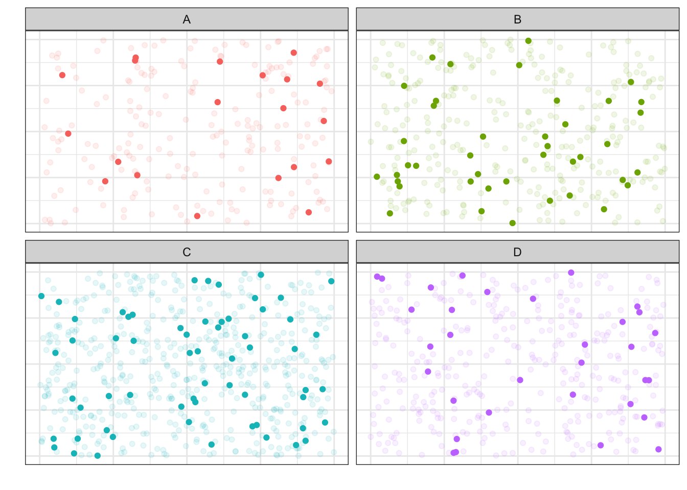
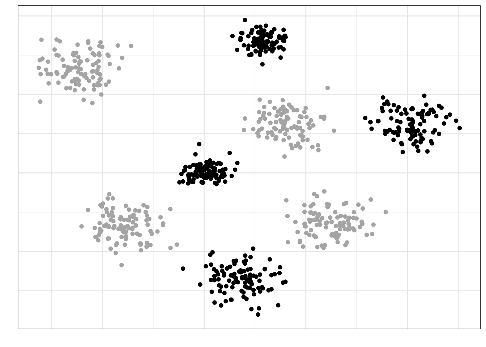
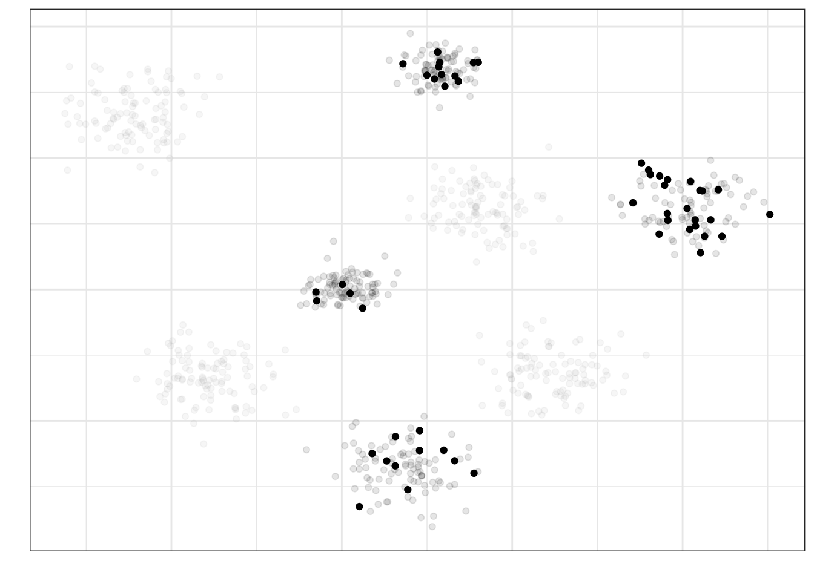
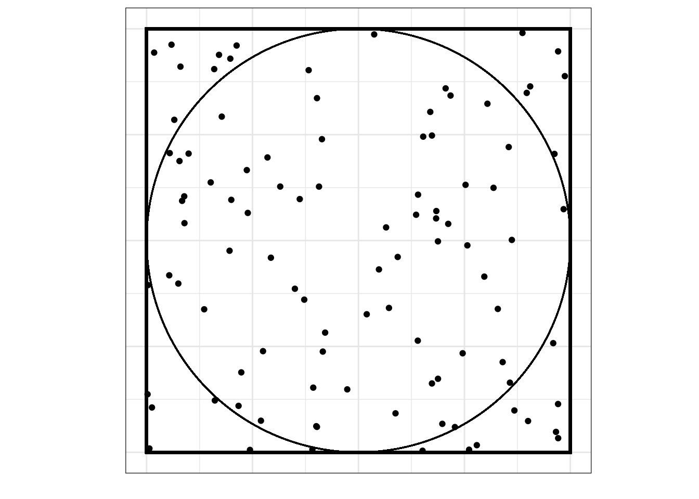
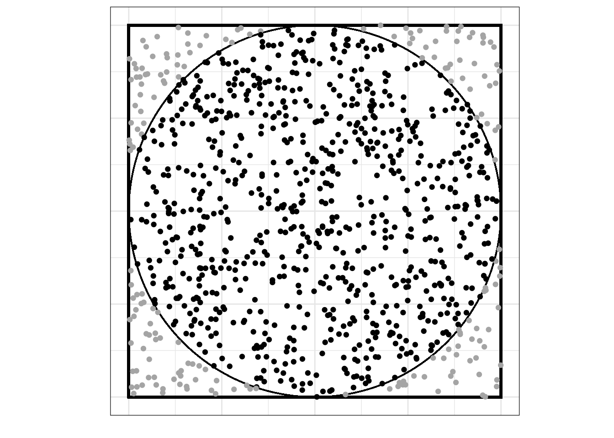

5 L5 // Введение в статистику. Случайный эксперимент и случайные величины
5.1 Введение в математическую статистику
Статистика — это междисциплинарная область знаний, а также практической деятельности, изучающая массовые явления, а также прицнипи и методы работы с данными, характеризующими эти явления.
Массовые явления затрагивают огромные массы людей. Огромность масс, конечно, различна. Скажем, базовые перцептивные закономерности, связанные с тем, как устроена зрительная система, охватывают всех людей. Уровень удовлетворенности жизнью россиян охватывает только население России. Городские блага москвичей — только для жителей Москвы. Учебная мотивация студентов департамента психологии НИУ ВШЭ — это только про людей с психологических бакалариата и магистратур НИУ ВШЭ.
5.1.1 Генеральная совокупность
Генеральная совокупность (population) — множество всех [существующих] исследуемых объектов и сведений о них.
Объем генеральной совокупности (\(N\)) — число единиц, образующих генеральную совокупность.
Генеральная совокупность недоступна для изучения в полном объеме, так как \(N\) имеет порядок сотен, тысяч или даже миллионов… Поэтому в рамках исследований мы всегда работаем с выборкой.
5.1.2 Выборка
Выборка, или выборочная совокупность (sample) — множество объектов генеральной совокупности, объемом \(n\) (\(n \ll N\)).
5.1.2.1 Репрезентативность выборки
Статистика даёт нам теоретический и математический аппарат, который позволяет делать выводы о генеральной совокупности по выборке. Однако если мы криво собрали данные, то никакая математика нас не спасет от некорректных выводов.
Garbage in, garbage out.
Репрезентативность — степень соответствия характеристик выборки характеристикам генеральной совокупности.
Например, мы хотим исследовать связь учебной мотивации и академической успеваемости бакалавров психологии. Если мы соберем данные только со своих однокурсников, будет нехорошо, так как в нашу выборку не попали (1) другие курсы психологического бакалавриата нашего вуза, (2) бакалавры-психологи других вузов Москвы и (3) бакалавры-психологи вузов других городов России.
И так работает всегда.
Ну, почти. Есть соблазн проводить исследования на студентах-психологах, потому что они достаточно близко и их можно загнать на эксперименты за баллы. Более-менее сносно это может работать на каких-то базовых когнитивных феноменах из восприятия и памяти. Обычно у нас нет оснований предполагать, что восприятие и память работают по-разному у людей разного возраста и разных социальных страт. Но вот уже с мышлением возникают проблемы.
Почему выборка должна быть репрезентативной?
Потому что если мы делаем нормально, то хотим обобщать результаты нашего исследования, полученные на выборке, на генеральную совокупность. Если выборка нерепрезентативна, то мы не можем этого сделать. Зачем в таком случае проводить исследование — решительно неясно.
5.1.2.2 Как набрать репрезентативную выборку
- Осознать, кто наша генеральная совокупность, так как для каждой генеральной совокупности репрезентативная выборка будет своя.
- Понять, есть ли какая-то группировка, важная для нашего исследования, в нашей генеральной совокупности — социальная страта, специальность образования, сфера работы, пол / гендер, возрастные группы, регион проживания, семейное положение, что-либо ещё.
- Рассчитать достаточный объём выборки. Это не самая простая задача и о ней мы будем говорить отдельно. Пока отметим в назывном порядке, что на объем выборки будут влиять дизайн исследования, изменчивость признака, уровень значимости и размер эффекта [что бы это ни значило].
- Обеспечить случайное попадание респондентов в выборку.
Здесь надо остановиться подробнее. Если у нас есть ресурсы набрать много человеков в выборку (скажем, раза в 2–3 больше, чем достаточный объем выборки), то можно просто случайным образом откуда-то доставать людей — и всё будет хорошо. Закон больших чисел и центральная предельная теорема говорят, что наша выборка будет репрезентативной. Пока примем это как данность, позже поговорим об это подробнее.
Для интересующихся
Закон больших чисел
С увеличением числа случайных величин их среднее арифметическое стремится к среднему арифметическому математических ожиданий и перестает быть случайным. Общий смысл закона больших чисел — совместное действие большого числа случайных факторов приводит к результату, почти не зависящему от случая.
Таким образом, закон больших чисел гарантирует устойчивость для средних значений некоторых случайных событий при достаточно длинной серии экспериментов.
Центральная предельная теорема
Распределение случайной величины, которая получена в результате сложения большого числа независимых случайных величин (ни одно из которых не доминирует, не вносит в сумму определяющего вклада и имеет дисперсию значительно меньше по сравнению с дисперсией суммы) имеет распределение, близкое к нормальному.
Из ЦПТ следует, что ошибки выборки также подчиняются нормальному распределению.
Если мы всё же не можем набрать много человеков, то надо набрать выборку достаточного объема и проверить репрезентативна ли она — отражает ли выборка те группировки объектов, которые есть в генеральной совокупности.
Идеальная выборка — это когда каждый человек имеет равную вероятность попасть в число респонтентов / испытуемых. Полностью случайный отбор трудно достижим — это очень дорого и логистически сложно — но к нему нужно стремиться. Сам метод сбора данных может деформировать выборку (например, онлайн опросы отсекают пенсионеров), поэтому думать о сборе данных необходимо уже на этапе планирования исследования.
5.1.2.3 Способы формирования репрезентативной выборки
Здесь представлены три классических способа формирования выборки. В конкретном исследовании мы можем использовать и какие-либо другие способы формирования выборки, однако нам нужно будет обосновать, почему с нашем случае тот или иной способ позволяет собрать репрезентативную выборку.
5.1.2.3.1 Простая случайная выборка (simple random sample)
- Элементы генеральной совокупности случайным образом попадают в выборку
- С увеличением объема простая случайная выборка будет все больше напоминать генеральную совокупность по своим характеристикам.
Представим, что на этой картинке изображена вся генеральная совокупность:
Если мы наберем простую случайную выборку из этой генеральной совокупности, она будет выглядеть так (черные точки):

Как можно заметить, в выборку попали объекты из всех частей нашей генеральной совокупности — говорит о том, что выборка репрезентативна.
5.1.2.3.2 Стратифицированная выборка (stratified sample)
- Генеральная совокупность разбивается на несколько обособленных различных по своей природе групп (страт). Например, по полу или уровню образования
- Из каждой группы случайным образом выбираются несколько объектов, которые попадают в выборку.
Пусть в нашей генеральной совокупности есть четыре страты:

Тогда мы можем разделить её на четыре «генеральных совокупности» соответственно:
Из каждой такой «генеральной совокупности» будем извлекать случайную выборку:

5.1.2.3.3 Групповая выборка (cluster sample)
- Генеральная совокупность разбивается на несколько обособленных, но одинаковых групп (кластеров). Например, население города группируется по району проживания
- Выбираются случайным образом несколько групп
- Из каждой группы случайным образом выбираются несколько объектов, которые попадают в выборку.
Пусть мы разделили нашу генеральную совокупность на 8 кластеров:
Кластеры у нас примерно одинаковые по характеристикам между собой — по крайне мере, мы так предполагаем. Выберем случайно четыре кластера, которые примут участие в исследовании:

Теперь из этих кластеров наберем выборку (допустим, по 20 наблюдений из кластера) случайным образом (объекты, попавшие в итоговую выборку отмечены черным контуром, не попавшие — серым):

Такой подход к формированию выборки позволяет экономить драгоценные ресурсы при проведении исследования.
Подробнее про разные способы сбора выборки можно почитать тут.
5.1.3 Характетистики объектов выборки и генеральной совокупности
Объекты генеральной совокупности обладают определенными признаками, которые мы и хотели бы изучать. Признаки количественно выражены в определенных показателях. Например,
| Признак | Показатель |
|---|---|
| Рабочая память | Объем рабочей памяти |
| Нейротизм | Уровень нейротизма по BFI |
| Доход | Совокупный годовой доход после уплаты налогов |
| Когнитивная нагрузка | Уровень когнитивной нагрузки по ЭЭГ-коррелятам |
| Доверие к ИИ | Уровень доверия к ИИ по опроснику TAIA |
| Индивидуализм/коллективизм | Индекс индивидуализма/коллективизма по модели Хофстеде |
Признаки могут быть очень разными и измеряться могут с помощью разных показателей.
Независимо от того, как измеряется признак, генеральная совокупность характеризуется параметром.
Параметр (\(\theta\)) — относительно постоянная [от одной совокупности к другой] величина, харакретизующая генеральную совокупность по некоторому показателю.
Ну, то есть в принципе существует средний уровень нейротизма по BFI студента-психолога или индекс индивидуализма/коллективизма для конкретной культуры. Проблема в том, что величина параметра, который мы изучаем, неизвестна. И никогда не будет известна.
Но почему?
- Мы не можем изучать всю генеральную совокупность — слишком много объектов
- Наши измерения всегда содержат ошибку — мы даже длину линейкой точно не можем измерить, что уж о психологических измерениях говорить
Поэтому величину параметра мы можем только предсказать с определённой статистической точностью. Измеряя что-либо на выборке, мы получаем выборочную характеристику, или оценку (\(\hat \theta\)) — эмпирический (измеримый) аналог параметра.
5.1.4 Характеристики статистических данных
Итак, теперь задумаемся о том, что мы собираем на выборке некоторые данные. К каким их особенностям приведут все моменты, описанные выше?
- Мы не можем работать с генеральной совокупностью, поэтому набираем выборку — выборки между собой имеют право различаться
- Каждый респондент или испытуемый обладает своими особенностями — мы не знаем, что мы получим в результате конкретного измерения на конкретном изучаемом объекте1
- Любое наше измерение содержит ошибку — ни один измерительный инструмент не является совершенным
Всё это приводит нас к двум ключевым характеристикам статистически данных — неопределенности и вариативности.
- Неопределённость нам говорит о том, что мы не знаем, что именно мы получим в результате наших измерений для конкретной выборки.
- Отсюда чуть позже возникнут случайные величины.
- Вариативность означает, что наши данные будут различатся от выборки к выборке и от респондента к респонденту
- Отсюда возникнут статистические критерии, в которых эта характеристика данных будет учтена в ходе тестирования гипотез.
5.1.5 Зачем нужна статистика?
Мы в какой-то малоприятной ситуации… Мы пытаемся измерить то, что в определенном смысле невозможно измерить, при этом достаточно точно, чтобы потом это можно было сравнивать или строить какие-то модели. Задача выглядит заведомо провальной…
Однако именно в этот момент на помощь нам приходит статистика. Не в гордом одиночестве, конечно. Она проводит с собой теорию измерений, психометрику, теорию обнаружения сигнала и др. Всё это работает в нашей психологической науке в комлексе.
Статистика даёт нам теоретический и математический инструментарий, чтобы мы могли делать какие-либо выводы по нашим собранным данным. К сожалению, как бы нам не хотелось, мы не можем делать выводы по сырым данным, потому что измерения по выборке не отражают вот прям ровно то, что есть в генеральной совокупности. Нам их надо определенным образом обсчитать, чтобы наши выводы были корректными. Этим и занимается статистика.
Возможно, это звучит достаточно абстрактно, но я хочу, чтобы на данном моменте вы поймали некоторое интуитивное понимание того, зачем нужна статистика. Далее это обрастёт содержанием и уложится, я надеюсь, в достаточно стройную систему.
Итог — статистика помогает нам делать выводы о нашей генеральной совокупности по выборке.
5.2 Случайный эксперимент
Отвлечемся немного на любимый объект статистиков — игральный кубик.
- Бросание игрального кубика — это случайный эксперимент.
- Выпавшее число — это случайная величина.
Теперь более строго.
Случайный эксперимент — это математическая модель некоторого реального эксперимента, результат которого невозможно точно предсказать.
Ключевой момент в случайном эксперименте — это то, что его результат невозможно точно предсказать, то есть какой стороной упадёт кубик заранее неизвестно.
Это не соотносится с экспериментом как методом исследования. Эксперимент как метод исследования включает в себя сложную процедуту экспериментального воздействия, контроля систематических и несистематических смешений, манипуляции с независимыми переменными и фиксирование зависимых переменных и т.д. Случайный эксперимент же является частью эксперимента.
Посмотрим на примеры из психологического поля:
- ответ респондента на пункт (айтем) опросника — это случайный эксперимент
- неизвестно, какой балл выберет респондент
- клик на стимул на экране в эксперименте на зрительный поиск — это случайный эксперимент
- заранее неизвестно, когда точно испытуемый кликнет по стимулу
- запись ЭЭГ-активности в конкретный момент времени — это случайный эксперимент
- неизвестно, что мы зафиксируем в конкретный момент
- и т.д.
Отсюда мы делаем важный вывод: любой акт измерения — это [с точки зрения статистики] случайный эксперимент.
5.2.1 Модель случайного эксперимента
На модель случайного эксперимента накладывается ряд требований:
- адекватность описания реального эксперимента (в нашем случае, акта (момента) измерения)
- определение совокупности наблюдаемых результатов случайного эксперимента (при фиксированных начальных данных)
- принципиальная возможность осуществления эксперимента со случайным исходом сколько угодно большое количество раз (при фиксированных начальных данных)
- стохастическая устойчивость относительной частоты для любого наблюдаемого результата
Для того, чтобы это всё понять, нужно ввести некоторые концепты.
5.2.2 Элементарные исходы и события
В случайном эксперименте возможны различные исходы, называемые элементарными событиями (\(\omega_i\)). Например, в случае упомянутого выше игрального кубика при его бросании возможны шесть элементарных событий (исходов):
- \(\omega_1\) — выпала грань с одной точкой
- \(\omega_2\) — выпала грань с двумя точками
- \(\omega_3\) — выпала грань с тремя точками
- \(\omega_4\) — выпала грань с четырьмя точками
- \(\omega_5\) — выпала грань с пятью точками
- \(\omega_6\) — выпала грань с шестью точками
Множество всех элементарных событий называется пространством элементарных событий (\(\Omega\)) случайного эксперимента.
В случае игрального кубика можно записать так:
\[ \Omega = \{\omega_1, \omega_2, \omega_3, \omega_4, \omega_5, \omega_6\} \]
В общем случае, когда возможны \(n\) случайный исходов случайного эксперимента, пространство элементарных событий будет выглядеть так:
\[ \Omega = \{\omega_1, \omega_2, \dots, \omega_{n-1}, \omega_n\} \]
Аналогично, в случае, когда случайным экспериментом будет ответ респодента на пункт опросника по пятибалльной шкале Ликерта, пространство элементарных событий будет выглядеть так:
\[ \Omega = \{\omega_1, \omega_2, \omega_3, \omega_4, \omega_5\}, \]
где
- \(\omega_1\) — дан ответ «1» / «не согласен»
- \(\omega_2\) — дан ответ «2» / «скорее, не согласен»
- \(\omega_3\) — дан ответ «3» / «ни то, ни другое»
- \(\omega_4\) — дан ответ «4» / «скорее, согласен»
- \(\omega_5\) — дан ответ «5» / «согласен»
В пространстве элементарных событий определяются случайные события — любое подмножество множества элементарных событий. Например, для игрального кубика
- случайное событие «выпало четное число очков» соответствует множеству \(A_{\text{even}} = \{\omega_2, \omega_4, \omega_6\}\)
- случайное событие «выпало нечетное число очков» соответствует множеству \(A_{\text{odd}} = \{\omega_1, \omega_3, \omega_5\}\)
- случайное событие «выпала грань с тремя точками» соответствует множеству \(A_3 = \{\omega_3\}\)
- случайное событие «не выпало ни одной грани» соответствует множеству \(A_0 = \varnothing\) — такое событие называется невозможным
- случайное событие «выпала любая грань» соответствует множеству \(A_{\text{any}} = \Omega = \{\omega_1, \omega_2, \omega_3, \omega_4, \omega_5, \omega_6\}\) — такое событие называется достоверным
Обратите внимание, что \(A_{\text{even}} \subset \Omega\), \(A_{\text{odd}} \subset \Omega\), \(A_3 \subset \Omega\), \(A_0 \subset \Omega\) и \(A_{\text{any}} \subset \Omega\), что как раз и утверждает определение случайного события.
Всё множество случайных событий \(A_i\) обозначается2 \(\mathcal A\).
- Если пространство элементарных событий конечно или счетно, то оно называется дискретным.
- Если пространство элементарных событий недискретно и элементарными исходами являются числа, то оно называется непрерывным.
5.2.3 Вероятность
Окей, мы ввели пространство элементарных событий \(\Omega\) и множество случайных событий \(\mathcal A\). Однако этого оказывается недостаточно, чтобы работать с результатами случайного эксперимента. Так как исход случайного эксперимента невозможно точно предсказать, необходимо ввести меру, которая будет описывать возможность наступления того или иного события. Такая мера называется вероятностью.
Вероятность (\(\mathbb{P}\))— относительная мера возможности наступления некоторого события в результате случайного эксперимента.
5.2.3.1 Классическая вероятность
Вернемся вновь к игральному кубику. Напомним себе, что мы определили пространство элементарных событий для случайного эксперимента «бросание игрального кубика» следующим образом:
\[ \Omega = \{\omega_1, \omega_2, \omega_3, \omega_4, \omega_5, \omega_6\} \]
Зададим следующие ограничения, чтобы было удобнее работать с чиселками:
- вероятность достоверного события должна равняться единице — \(\mathbb{P}(\Omega) = 1\)
- вероятность невозможного события должна равняться нулю — \(\mathbb{P}(A_0) = 0\)
Предполагая, что кубик честный, то есть выпадение каждой грани равновозможно, можно определить вероятность выпадения каждой грани как
\[ \mathbb{P}(\omega_i) = \frac{1}{n}, \]
где \(n\) — количество всех возможных элементарных исходов случайного эксперимента. Получается, вероятность выпадения каждой грани — \(\frac{1}{6}\).
Аналогично можно определить вероятность любого случаного события \(A_i\):
\[ \mathbb{P}(A_i) = \frac{n_i}{n}, \]
где \(n_i\) — количество элементарных исходов, составляюших событие \(A_i\), а \(n\) — количество всех возможных элементарных исходов случайного эксперимента. Получается, что вероятность выпадения четного числа очков \(\mathbb{P}(A_\text{even}) = \frac{3}{6} = \frac{1}{2}\), что достаточно логично.
Такой подход к вероятности называется классической вероятностью. Возвращаясь к требованиям модели случайного эксперимента, можно заключить, что такая модель (1) адекватно описывает реальный эксперимент, так как предсказанные вероятности согласуются с наблюдениями, (2) определяет совокупность наблюдаемых результатов случайного эксперимента (\(\Omega\) и \(\mathcal A\)) и допускает принципиальную возможность осуществления случайного эксперимента сколь угодно большое количество раз.
Тройку \((\Omega, \mathcal A, \mathbb{P})\) называются вероятностным пространством.
5.2.3.2 Статистическая вероятность
С игральным кубиком классическая вероятность прекрасно работает. Однако задумается о следующем случае: какова вероятность встретить динозавра на улице?
Воспользуемся классическим подходом к вероятности. Зададим пространство элементарных событий, которое будет выглядеть так: \(\Omega = \{\omega_1, \omega_2\}\), где \(\omega_1\) — встреча с динозавром случилась, а \(\omega_2\) — встреча с динозавром не случилась.
Получается, что вероятность встретить динозавра на улице равняется
\[ \mathbb{P}(\omega_1) = \frac{1}{n} = \frac{1}{2} \]
То есть, каждый второй день мы по пути на работу должны сталкиваться с каким-нибудь жителем триаса. Однако наши наблюдательные данные говорят, что этого не происходит. Получается, такая модель неадекватна реальности. В чем тут дело?
Классическая вероятность исходит из допущения равновозможности наступления любого элементарного исхода. Данное допущение в случае с динозавром нарушается. Чтобы корректно определить вероятность в данном случае, необходимо использовать статистическую вероятность.
Формально статистическая вероятность определяется как предел частоты наблюдений некоторого события при стремлении количества наблюдений к бесконечности [при их независимости (наблюдения не влияют друг на друга) и однороности (условия наблюдений одинаковы)]:
\[ \mathbb{P}(A) = \lim_{N \rightarrow \infty} \frac{n}{N}, \]
где \(N\) — количество наблюдений, а \(n\) — количество наступлений события \(A\).
То есть, чтобы оценить вероятность некотрого события, надо многократно повторить случайный эксперимент (провести большое количество наблюдений), посчитать, в скольки наблюдениях наступило интересующее нас событие, и поделить одно на другое. И чем больше наблюдений мы проведем, тем более точну оценку вероятности мы получим.
Такой подход дает адекватное описание происходящему в реальном мире — вероятность встретить динозавра оказывается равной (крайне близкой) к нулю.
Отметим, что этот подход работает и с игральным кубиком: совершив много бросков кубика мы сможем выяснить, что вероятность выпадения каждой грани — \(\frac{1}{6}\), при условии, что кубик честный (что является допущением классической вероятности).
Мы будем опираться на статистический подход, поскольку в реальной исследовательской работе мы обычно имеем дело именно с неравновозможными событиями.
5.2.3.3 Геометрическая вероятность
Посмотрим еще на один подход к определению вероятности. Поставим себе весьма абстрактную, но веселую задачу.
Возьмем квадрат, в который вписан круг:
Будем бросать в этот квадрат точки случайным образом:

Вопрос: какова вероятность, что случайно брошенная точка попадет в круг (событие \(A\))?
Мы можем воспользоваться статистическим подходом к вероятности, набросать побольше точек и посчитать, сколько из них попало в пределы круга:

Из визуализации видно, что в конечном итоге при очень большом количестве бросаний точек они заполнят всю площадь квадрата, а значит, и всю площадь круга, поэтому вероятность попадания случайно прошенной точки в круг равняется отношению площади круга к площади квадрата, то есть:
\[ \mathbb{P}(A) = \lim_{N \rightarrow \infty} \frac{n}{N} = \frac{S_\text{circle}}{S_\text{square}} \]
Можно расписать точнее, если вспомнить геометрические формулы:
\[ \mathbb{P}(A) = \frac{S_\text{circle}}{S_\text{square}} = \frac{\pi r^2}{a^2} = \frac{\pi \big(\frac{1}{2}a\big)^2}{a^2} = \frac{1}{4}\pi \approx 0.785 \]
Такое подход к определению вероятности называется геометрической вероятностью.
Отметим, что плоский случай можно обобщить и до объемного. В случае куба и шара вероятность будет равна
\[ \mathbb{P}(A) = \frac{V_\text{circle}}{V_\text{square}} = \frac{\frac{4}{3}\pi r^3}{a^3} = \frac{1}{6} \pi \approx 0.523 \]
5.3 Случайные величины
Когда мы первый раз обратились к игральному кубику,мы сказали, что бросание игрального кубика — это случайный эксперимент, а выпавшее число — это случайная величина. Со случайным экспериментом разобрались, приступим к случайным величинам.
Случайная величина — это некоторая переменная, значения которой представляют собой численные исходы некоторого случайного эксперимента.
В частности, исход бросания кубика — выпавшее число, исход фиксации времени реакции в эксперименте — количество миллисекунд (число), исход измерения псиометрического конструкта — суммарный балл по опроснику (число) и т.д.
Сами исходы случайного эксперимента числами быть в общем случае не обязаны, поэтому формально случайную величину \(\xi\) определяют как функцию \(y = \xi(\omega)\), или \(\xi: \Omega \rightarrow \mathbb{R}\), на вероятностном пространстве \((\Omega, \mathcal A, \mathbb{P})\), которая сопоставляет исходам случайного эксперимента некоторые числа.
Поскольку случайная величина это численное выражения исходов случайного эксперимента, а сами исходы осуществляются с определенными вероятностями, чтобы мочь работать со случайной величиной, необходимо задать эту самую случайную величину, то есть описать её вероятностные свойства. Эти мы далее и займемся.
В зависимости от того, какое пространство элементарных событий было в случайном эксперименте — дискретное или непрерывное — случайные величины также могут быть дискретными или непрерывными.
5.3.1 Дискретные случайные величины
Случайная величина является дискретной, если множество её значений конечно или счётно. Это позволяет задать случайную величину с помощью функции вероятности (probability mass function, PMF).
- Множеством определения (domain) этой функции будет множество значений случайной величины
- Множеством её значений (range) будет отрезок \([0, 1]\)
- Сами значения будут определять вероятность, с которой происходит реализация определенного элементарного исхода соответствующего случайного эксперимента
Посмотрим на примере игрального кубика. Множество определения функции вероятности известно — \(\{1, 2, 3, 4, 5, 6\}\). Каждое значение выпадает с вероятностью \(\frac{1}{2}\), поэтому множество значений также известно. Можно построить график функции вероятности для этой случайной величины \(X\):
Поскольку случайная величина дискретная, то и функция у нас получается дискретная, что выражается в том, что она отображена точками. Задав таким способом случайную величину мы полностью определяем её математическое поведение и можем с ней работать. Более того, мы можем записать её следующим образом:
\[ f(x) = \mathbb{P}(X = x), \]
где \(f(x)\) — функция вероятности, \(X\) — случайная величина, \(x\) — конкретное значение случайной величины.
Из того, как задана эта функция, вытекают её следующие свойства:
- \(\forall i \in \mathbb{N}\, f(x_i) \geq 0\)
- \(\sum_{i=1}^\infty f(x_i) = 1\)
Другим способом задания случайной величины является функция распределения (cumulative distribution function, CFD). Эта функция задается следующим образом:
\[ F(x) = \mathbb{P}(X < x), \] где \(F(x)\) — функция распределения, \(X\) — случайная величина, \(x\) — конкретное значение случайной величины. То есть значение функции распределения для данного значения случайной величины определяет вероятность того, что случайная величина примет такое или меньшее значение.
Функция распределения может быть определена через функцию вероятности следующим образом:
\[ F(x) = \sum_{x' \leq x} f(x') \]
Опираясь на это определение, можно изобразить график для случая игрального кубика:
Эта функция также является дискретной.
5.3.2 Непрерывные случайные величины
Случайная величина является непрерывной, если множество её значений обладает мощностью континуума.
Если с дискретными случайными величинами все достаточно просто, то при работе с непрерывными мы сталкиваемся с определенной проблемой.
Зададимся вновь абстрактной, но интересной задачей: будем набирать числа из отрезка от нуля до единицы \([0, 1]\). Возникает очень простой вопрос — с какой вероятностью мы сможем вытащить, скажем, число 0.5? или 0.341? или любое другое? Считаем, что все числа нам могут попасться равновероятно.
Несмотря на допущение равновероятности, классическая вероятность нам здесь не поможет. При попытке определить вероятность как \(\frac{1}{n}\), мы выясним, что \(n\) у нас бесконечно3. Получается, что
\[ \mathbb{P}(X = x) = \frac{1}{n} = \frac{1}{\infty} = 0 \]
Или если записать это более аккуратно:
\[ \mathbb{P}(X = x) = \lim_{n \rightarrow \infty} \frac{1}{n} = 0 \]
Статистическая вероятность нам тоже не поможет. Да, мы можем нагенерировать сколько угодно случайных чисел от 0 до 1, однако все они будут уникальными — то есть нам все равно придется делить на очень большое \(n\), которое будет стремиться к бесконечности при увеличении количества сгенерированных чисел, и мы получим тот же самый результат.
— Получается, что вероятность вытащить конкретное значение равна нулю?
— Да.
— Значит ли это, что мы не сможем извлечь из отрезка от 0 до 1 ни одного числа?
— Нет.
Действительно, для непрерывных случайных величин справедливо утверждение:
\[ \mathbb{P}(X = x) = 0, \]
где \(X\) — непрерывная случайная величина, а \(x\) — её конкретное значение. То есть действительно,
вероятность того, что непрерывная случайная величина примет своё конкретное значение, равна нулю.
Однако это утверждение стоит понимать следующим образом: непрерывная случайная величина, конечно же, будет принимать какие-то конкретные значения в реализациях случайного эксперимента, однако если мы попытаемся орагнизовать случайный эксперимент так, чтобы она приняла значение \(x\), мы не сможем этого сделать — значение, которое мы с в итоге получим будет \(x \pm \varepsilon, \, \varepsilon > 0\). Это значит что мы можем попадать рядом с требуемым значением, сколь угодно близко, но в него никогда не попадем.
Что же делать в этой ситуации? Ведь нам очень надо работать с непрерывнями случайными величинами — в частности потому, что значения статистических критериев являются непрерывными случайными величинами. Чтобы обойти это нулёво-вероятностную неприятность, вводится понятие плотности вероятности.
5.3.2.1 Плотность вероятности
Плотность вероятности — это весьма трудно перевариваемый математический концепт. Попробуем провести аналогию между дискретными и непрервными случайными величинами, чтобы попытаться облечь это в какое-то осязаемое содержание.
Мы видели функцию вероятности для игрального кубика — напомним себе, как она выглядит:
Значения на гранях кубика выпадают равновероятно, поэтому мы видим «прямую» из точек. Если мы допускаем, что точки из нашего отрезка извлекаются также равновероятно, то мы хотели бы увидеть что-то такое:
По оси \(x\) у нас идут значения случайной величины — от 0 до 1. За этими пределами чисел мы не набираем, поэтому линия туда не продолжается. Внутри этого отрезка у нас прямая линия, которая выражает идею равновероятного выбора любой точки из отрезка. Вопрос только один: что по оси \(y\)???
Чтобы это понять, дайате сравним два графика ниже:
Они похожи, только на верхнем отображена функция вероятности для дискретной величины. а на нижнем что-то аналогичное для непрерывной. Если на верхнем по оси \(y\) явно идет вероятность, то на нижнем какая-то другая величина. Однако и по верхнему, и по нижнему графику мы можем сказать, что значения около 15 встречаются чаще, чем значения около, например, 20. Значения же около 2–3 встречаются так же редко, как значения около 29–30.
Окей, мы не можем работать в случае непрерывных случайных величин с конкретными значениями, но если мы выделим интервалы около интересующих нас значений, то вероятности попадания случайной величины в них мы уже можем посчитать. Возьмем значения 15 и 20 и немного отступим от них вправо — получатся интервалы \([15, 15 + \Delta x]\) и \([20, 20 + \Delta x]\):
График нам визуально подсказывает, что значения из интервала \([15, 15 + \Delta x]\) встречаются чаще, чем значения из интервала \([20, 20 + \Delta x]\) — это мы выяснили выше. Но можем ли мы на визуализации этих интервалов найти вероятность? Да, это будут закрашенные области под графиком. Идея здесь похожа на геометрическую вероятность, которую мы обсуждали ранее — чем больше площадь под графиком, тем больше вероятность попасть в заданный интервал.
Действительно, такой способ отображения вероятности согласуется с тем, что вы получили аналитически — если мы сократим \(\Delta x\) до нуля, то и площадь сократится до нуля, что будет означать нулевую вероятность принятия случайной величиной своего конкретного значения.
Хорошо, мы нашли вероятность. Но что же отображено на оси \(y\)? Это и есть та самая плотность вероятности.
Формально плотность вероятности случайной величины \(\xi\) — это числовая фукнция \(f(x)\), отношение \(\dfrac{f(x_1)}{f(x_2)}\) значений которой в точках \(x_1\) и \(x_2\) задаёт отношение вероятностей попадания случайной величины \(\xi\) в интервалы \([x_1, x_1 + \Delta x]\) и \([x_2, x_2 + \Delta x]\) при \(\Delta x \rightarrow 0\). Получается, что эта функция действительно отражает то, что определенные значения встречаются чаще, чем другие. График, который мы рассматривали выше, называется графиком функции плотности вероятности (probability density function, PDF).
Таким образом, введение концепта плотности вероятности для непрерывных случайных величин позволяет визуально изучать их аналогично дискретным случайным величинам. Отличия проявляются в аналитической работе с вероятностью. Поскольку вероятность того, что непрерывная случайная величина примет своё конктреное значение, равняется нулю, мы не можем работать с вероятностями отдельных значений. Однако можем работать с вероятностями интервалов значений непрерывной случайной величины. То есть, вероятность попадания значения случайной величины в интервал \([a, b]\) определяется как интеграл функции плоности вероятности:
\[ \mathbb{P}(a \leq X \leq b) = \int_a^b f(x) dx \]
Поскольку площадь под графиком функции плотности теперь определяет вероятность, необходимо потребовать, чтобы вся площадь под графиком была равна единице — вероятность того, что случайная величина примет хотя бы какое-то из своих значений:
\[ \int_{-\infty}^{+\infty} f(x) dx = 1 \]
Так и задается функция плотности вероятности.
Из функции плотности вероятности можно построить функцию распределения непрерывной случайной величины (cumulative distribution function, CDF) — это будет первообразная от функции плотности:
\[ F(x) = \int_{-\infty}^x f(t) dt \]
5.3.3 Нормальное распределение
Самое популярное распределение из всех распределений случайных величин — это нормальное распределение. Во-первых, потому что оно в принципе часто встречается в природе, а во-вторых, потому что из него получаются другие распределения. Познакомимся с ним подробнее.
Это непрерывное распределение, которое задается двумя параметрами — математическим ожиданием и дисперсией. Если некоторая случайная величина починяется нормальному распределению, это записывают следующим образом:
\[ X \thicksim \mathcal N (\mu, \sigma^2), \]
где \(X\) — случайная величина, \(\mathcal N\) — обозначение нормального распределения, \(\mu\) — математическое ожидание, \(\sigma^2\) — дисперсия.
Аналитически нормальное распределение задается следующей функцией плотности:
\[ f(x) = \frac{1}{\sigma \sqrt{2\pi}}e^{-\tfrac{(x - \mu)^2}{2\sigma^2}}, \]
\(x \in \mathbb{R}, \, \mu \in \mathbb{R}, \, \sigma \in \mathbb{R}_{>0}\).
Графически в зависимости от параметров \(\mu\) и \(\sigma^2\) может выглядеть по-разному, но это всегда хорошо знакомый всем «колокол»:
Математическое ожидание \mu задает положение середины «колокола» на оси \(x\), а дисперсия \(\sigma^2\) — ширину колокола.
Помимо математического ожидания и дисперсии, нормальное распределение характеризуется также коэффициентом асимметрии и коэффициентом эксцесса. Первый показывает, насколько симметрично распределение относительно математического ожидания, а второй — насколько оно сжато по бокам или, наоборот, растянуто вдоль оси \(x\).
- Поскольку любое нормальное распределение симметрично относительно математического ожидания, то коэффициент асимметрии любого нормального распределения равен нулю.
- Коэффициент эксцесса зависит от дисперсии
- для дисперсии, равной единице, коэффициент эксцесса равен нулю
- если дисперсия меньше 1 — значит, пик распределения высокий — то коэффициент эксцесса положительный
- если дисперсия больше 1 — значит, пик распределения гладкий — то коэффициент эксцесса отрицательный
Ширину «колокола» распределения можно описывать не только через дисперсию, но и через старндартное отклонение \(\sigma = \sqrt{\sigma^2}\). Использование стандартного отклонения позволяет определить верояности попадания значений случайной величины в определенные диапазоны:
Конкретно с этими вероятностями мы работаем реже — полезнее оказываются следующие:
- \(\mathbb{P}(X \in (\mu - \sigma, \mu + \sigma)) = 0.682\)
- \(\mathbb{P}(X \in (\mu - 2\sigma, \mu + 2\sigma)) = 0.956\)
- \(\mathbb{P}(X \in (\mu - 3\sigma, \mu + 3\sigma)) = 0.998\)
То есть
- в пределах одного стандартного отклонения от среднего значения лежит почти 70% значений — это очень частотные значения
- в пределах двух стандартных отклонений от среднего значения лежит 95% значений — бо́льшая часть выборки
- в пределах трех стандартных отклонений от среднего значения лежит практически 100% выборки — то есть вся выборка
Возможно, не очень хорошо называть человека «объектом», однако так как мы сейчас в методологии количественных исследований, будем оперировать именно этим термином.↩︎
Строго говоря, этим символом обозначается другая структура, называемая алгеброй (или сигма-алгеброй) событий, но нам будет достаточно этого более поверхностного понимания.↩︎
Мы можем даже сказать более точно: \(n = \aleph_1\).↩︎